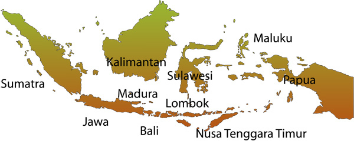

Tur Lestari di kepulauan Indonesia
Diego has been looking at the singer Cinta Mawar Lestari’s website. Cinta has posted a new vodcast to update fans about her up-coming tour. As she is talking about what will happen in the future, she uses the auxiliary verb akan.
In English, the verb changes with past, present or future tense (for example: (has) gone, (is) going, (will) go). However, in Indonesian, the verb does not change. Instead:
- akan is used for future tense
- sedang is used for present continuous tense (when you’re in the process of doing something)
- sudah or baru is used for past tense.
Listen to Cinta's podcast about her forthcoming tour. Click on each button in order to listen to her speak, then drag the pin to the place she says she is holding the concert.
You can click on the map to zoom in. There is no pin for the first audio clip, however you should listen to it to get used to the sound and pace of the speaker's voice.
Audio CD – Track 11
Listen to Cinta's vodcast about her up-coming tour. Locate all the places she mentions using the map of Indonesia and put them in the text box below. Check your answer when you have located all eight places.

Choose two islands to explore further. Look them up on GoogleEarthTM. With your class or teacher, share two interesting pieces of information you find out about each place.